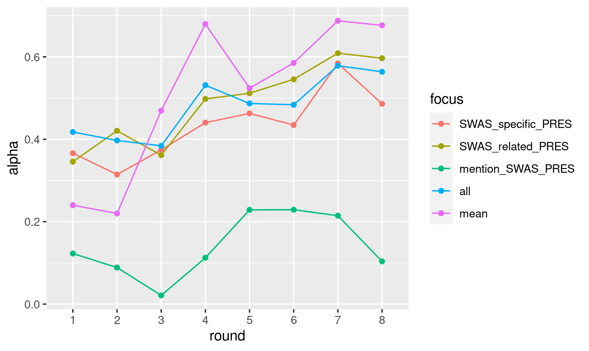
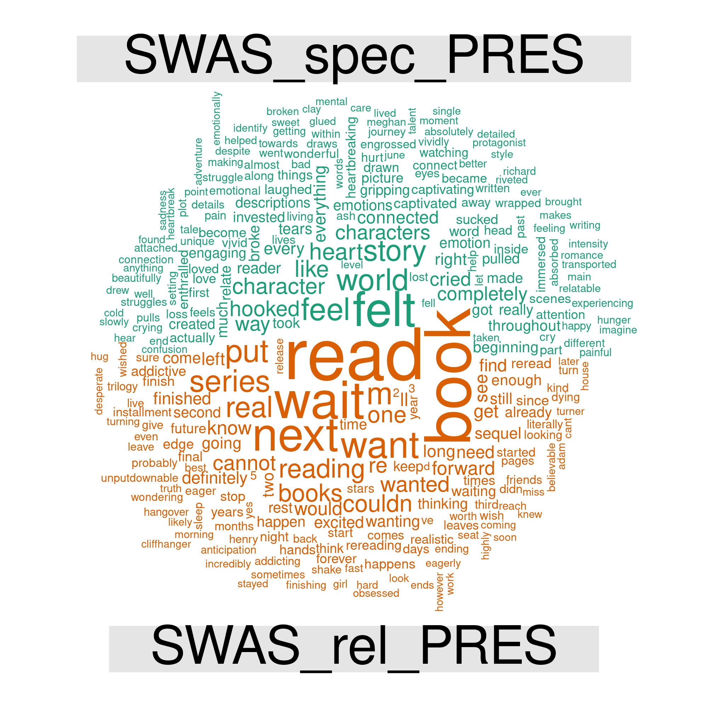
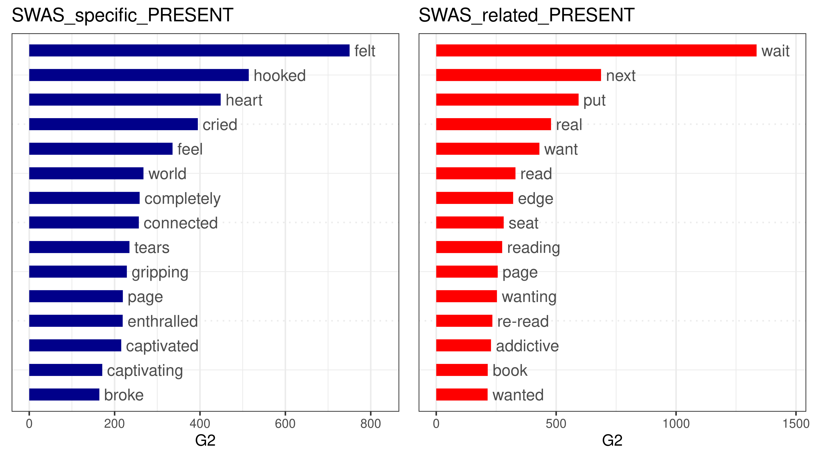
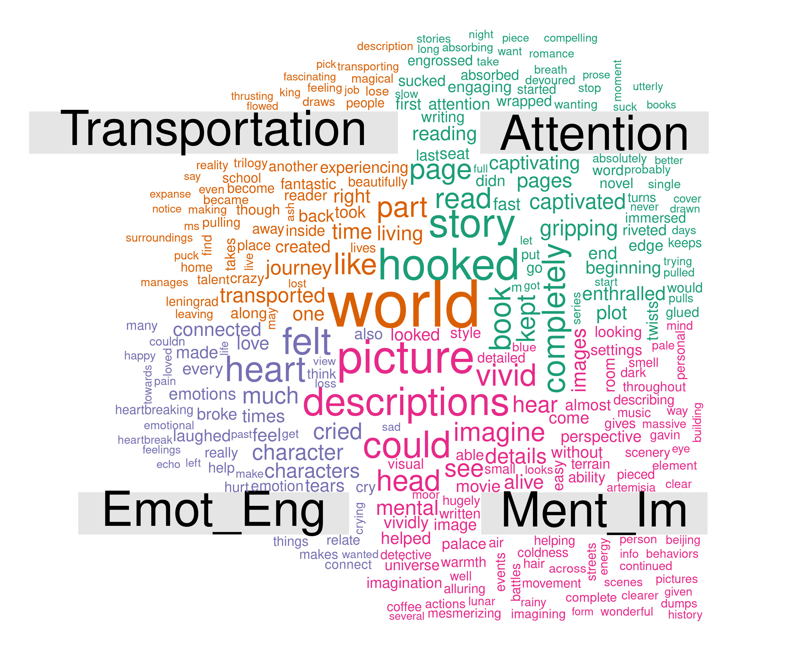
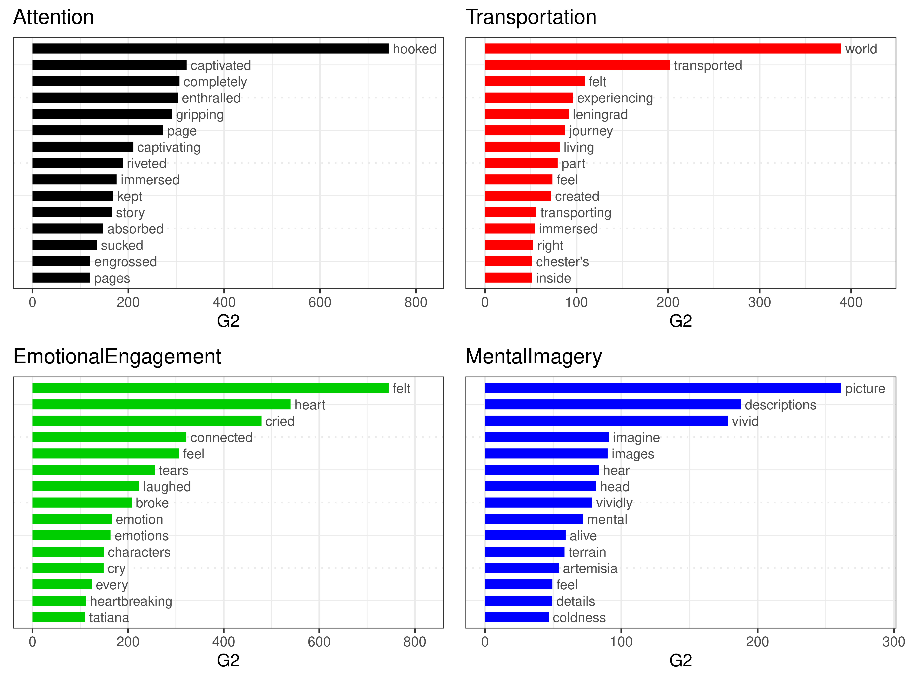

This paper presents our approach and interim results of the “Mining Goodreads” project, aimed at developing a computational approach to measure feelings of absorption in user-generated book reviews in English. Story world absorption is an experiential state driven by the reader's mental construction of a fictional world. Kuijpers (2014) proposed a theorization of story world absorption, distinguishing its four main dimensions: Attention (focused attention on the text, reducing awareness of the self and the passing of time), Transportation (the feeling of being transported to the story world), Emotional Engagement, and Mental Imagery. Kuijpers et al. (2014) developed and validated a corresponding questionnaire composed of 18 statements (Story World Absorption Scale, SWAS), which was already used in a series of studies on reader response (e.g., Hartung et al., 2017; Balint, Kuijpers & Doicaru, 2017; Kuzmicova et al., 2017).
Rebora et al. (2018) showed its application in DH research: manual analysis of 180 reviews published on Goodreads, one of the most popular “social reading” platforms (Cordón-García et al., 2013), indicated the utility of the SWAS in mining online book reviews for mentions of absorbing reading experiences. Multiple sentences of the Goodreads reviews show semantic and conceptual similarities with the 18 SWAS statements. Our experiments with software for text reuse detection and textual entailment recognition indicated the need for improved quality and quantity of manual annotations to be used as training data.
Therefore, in our current project, funded by the Swiss National Science Foundation in the “Digital Lives” program (grant nr. 10DL15_183194), we pursue two aims based on labeled data obtained from five trained annotators: (1) data-driven validation of SWAS through confrontation with idiosyncratic, unstructured texts in which people describe their reading experiences; (2) development of an annotated corpus for training machine learning classifiers to detect different levels of absorption in millions of reviews hosted on social reading platforms.
So far, eight annotation rounds were completed on a total of 890 reviews, using the Brat (Stenetorp et al., 2012) and INCEpTION (Klie et al., 2018) annotation tools on fully flexible spans of text tokens. In the first round, we used six labels: SWAS_specific, for sentences that show direct similarity with the SWAS statements; SWAS_related, for sentences not included in the SWAS, but listed in a wider taxonomy of reading absorption (Bálint et al., 2016); mention_SWAS, for mentions of the SWAS concepts without reference to the actual reading experience of the user who wrote the review (i.e., “usually when I read a book, I like to be able to fully imagine what the world of the story looks like”); and candidate for unclassifiable, potentially relevant absorption phenomena. The first two labels also had a Present/Absent flag, for signaling sentences that explicitly confirm or negate absorption concepts. In the following rounds, these labels were extended to up to 145 tags, allowing to mark up more fine grained phenomena, like the four dimensions of story world absorption (Attention, Transportation, Emotional Engagement, Mental Imagery).
Inter-annotator agreement varies substantially depending on the labels. Figure 1 shows the evolution of Krippendorff’s Alpha for the main tags in the eight rounds. As evident, there is a slight but steady improvement throughout the annotation process, that can be verified via the evolution of the “mean” and “all” scores: “mean” indicates the mean of the alpha scores for all of the tags (as it was not possible to calculate a single alpha score, because different tags could be assigned to the same sentences); “all” indicates the alpha score for a unique tag, obtained by checking if the sentence was annotated or not, independently from the assigned tag. In both cases, values move from fair (~0.2/0.4) to substantial agreement (~0.6/0.7). Among the high-level tags, SWAS_related_PRESENT reaches the highest values, while mention_SWAS_PRESENT scores the lowest, confirming the difficulty in recognizing absorption when no experiences of the I are mentioned.
Figure 1. Inter-annotator agreement for the eight rounds of annotation. Alpha scores were calculated on a sentence basis (sentences split using spaCy)
Curation is currently in progress. However, first results confirm the already-observed trends. Mean agreement with the curator (mean Cohen’s Kappa for the “all” tag) was 0.55 for the first round, while it reached 0.68 for the fourth.
The annotated segments offer the possibility to explore the different linguistic choices of reviewers. Figure 2 shows already some clear distinctions: verbs like “wait” and “want” and general references to the reading experience dominate the SWAS_related area. On the other hand, terms like “felt”, “characters”, and “story” indicate the stronger focus of the SWAS on personal involvement in the story world. These outcomes provide valuable information for validation and future development of the SWAS.
To confirm these findings, we used log-likelihood tests and compared the annotated texts with 100,000 randomly-selected reviews. Figure 3 confirms the dominance of emotional states in the SWAS_specific area, while SWAS_related terms like “wait”, “next”, “edge” and “seat” signal the frequent repetition of expressions of anticipation such as: “I cannot wait to read the next book in the series” and “I was on the edge of my seat”.
Figure 2. Comparative word cloud based on the most frequently annotated words (SWAS_specific_PRESENT vs. SWAS_related_PRESENT annotations)
Figure 3. Overrepresented words in the annotated passages (SWAS_specific_PRESENT and SWAS_related_PRESENT annotations). Log likelihood calculated with the Quanteda R package
Focusing on the four SWAS dimensions, distinctions become even more fine grained. Figures 4 and 5 demonstrate for example how the phenomenon of Attention stimulates the widest reflections on the reading experience (e.g., on how “hooking” and “captivating” it can be). Transportation and Emotional Engagement partly share the keyword “felt”: however, in the first case it means a more cognitively-aware “experiencing” of the fictional world, while in the second it relates to the deepest personal feelings (with a slight dominance of the negative over the positive). Mental Imagery shows at the same time the widest selection of words (cf. Figure 4) and its lowest distinctiveness (cf. Figure 5), confirming the lower presence and definition of the phenomenon in the Goodreads reviews.
Figure 4. Comparative word cloud of most frequently annotated words (four SWAS dimensions)
Figure 5. Overrepresented words in the annotated passages (four SWAS dimensions). Log likelihood calculated with the Quanteda R package
With the aim of extending the analysis on a much wider corpus, we used several state of the art machine learning approaches to train a binary classifier on the annotated reviews, cf. (Lendvai et al. 2020). When the current full dataset became available for training, a fine-tuned version of BERT (Devlin et al. 2018) reached 0.63 F-score on the target class, i.e., detecting absorption statements, and a linear regression model stacked on BERT predictions reached a mean average error of 0.08, cf. (Lendvai, Reichel, et al. 2020). These results strongly suggest that we can automate the annotation task in the future.
With reference to the conference theme, our research shows: (1) the utility of human agreement studies before the building of tools for DH; (2) the urge that computational literary studies move their attention towards the open and polyvocal treasure trove of information provided by social reading platforms (cf. Rebora et al., 2019).
References
Bálint, K., Hakemulder, F., Kuijpers, M. M., Doicaru, M. M. and Tan, E. S. (2016). Reconceptualizing foregrounding: Identifying response strategies to deviation in absorbing narratives. Scientific Study of Literature, 6(2): 176–207 doi:10.1075/ssol.6.2.02bal.
Bálint, K., Kuijpers, M. M., Doicaru, M. M., Hakemulder, F., & Tan, E. S. (2017). The effect of suspense structure on felt suspense and narrative absorption in literature and film. Narrative Absorption, 27, 177.
Cordón-García, J.-A., Alonso-Arévalo, J., Gómez-Díaz, R. and Linder, D. (2013). Social Reading. Oxford: Chandos.
Devlin, J., Chang M.W., Lee K., Toutanova K. (2018). BERT: Pre-training of deep bidirectional transformers for language understanding. arXiv preprint, arXiv:1810.04805.
Hartung, F., Withers, P., Hagoort, P. and Willems, R. M. (2017). When Fiction Is Just as Real as Fact: No Differences in Reading Behavior between Stories Believed to be Based on True or Fictional Events. Frontiers in Psychology, 8 doi:10.3389/fpsyg.2017.01618. http://journal.frontiersin.org/article/10.3389/fpsyg.2017.01618/full (accessed 14 June 2020).
Klie, J.-C., Bugert, M., Boullosa, B., Castilho, R. E. de and Gurevych, I. (2018). The INCEpTION Platform: Machine-Assisted and Knowledge-Oriented Interactive Annotation. Proceedings of the 27th International Conference on Computational Linguistics: System Demonstrations. Association for Computational Linguistics, pp. 5–9 http://tubiblio.ulb.tu-darmstadt.de/106270/.
Kuijpers, M. M. (2014). Absorbing stories. The effects of textual devices on absorption and evaluative responses. Unpublished PhD Thesis.
Kuijpers, M. M., Hakemulder, F., Tan, E. S. and Doicaru, M. M. (2014). Exploring absorbing reading experiences. Developing and validating a self-report scale to measure story world absorption. Scientific Study of Literature, 4(1): 89–122.
Kuzmi?ová, A., Mangen, A., Støle, H., & Begnum, A. C. (2017). Literature and readers’ empathy: A qualitative text manipulation study. Language and Literature, 26(2), 137-152.
Lendvai, P., Darányi, S., Geng, C., Kuijpers, M., Lopez de Lacalle, O., Mensonides, J.-C., Rebora, S. and Reichel, U. (2020). Detection of Reading Absorption in User-Generated Book Reviews: Resources Creation and Evaluation. Proceedings of The 12th Language Resources and Evaluation Conference. Marseille, France: European Language Resources Association, pp. 4835–4841 https://www.aclweb.org/anthology/2020.lrec-1.595 (accessed 14 June 2020).
Lendvai, P., Reichel, U., Kuijpers, M. and Rebora, S. (2020). Ranking of Social Reading Reviews Based on Richness in Narrative Absorption. SwissText and Konvens 2020 5th SwissText & 16th KONVENS Joint Conference.
Rebora, S., Lendvai, P. and Kuijpers, M. (2018). Reader experience labeling automatized: Text similarity classification of user-generated book reviews. EADH2018. Galway: EADH https://eadh2018.exordo.com/programme/presentation/90 (accessed 14 June 2020).
Rebora, S., Boot, P., Pianzola, F., Gasser, B., Herrmann, J. B., Kraxenberger, M., Kuijpers, M., et al. (2019). Digital Humanities and Digital Social Reading. OSF Preprint doi:10.31219/osf.io/mf4nj. https://osf.io/mf4nj (accessed 14 June 2020).
Stenetorp, P., Pyysalo, S., Topi?, G., Ohta, T., Ananiadou, S. and Tsujii, J. (2012). BRAT: a web-based tool for NLP-assisted text annotation. Proceedings of the Demonstrations at the 13th Conference of the European Chapter of the Association for Computational Linguistics. Association for Computational Linguistics, pp. 102–07.